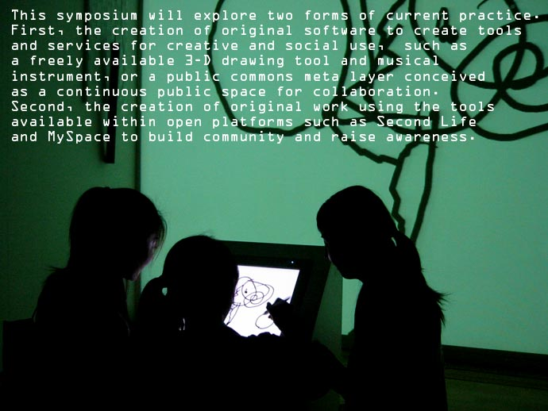

|
Pace Digital Gallery is pleased to host Programmable Media
a free symposium presented by Turbulence.org
Friday
March 2nd, 10:00am to 3:30pm
Pace University, Multipurpose Room, 1 Pace Plaza
click for symposium program - pdf format
click for the Turbulence.org
Networked Performance Blog
PARTICIPANTS:
Helen Thorington, Michelle Riel, Mushon Zer-Aviv and Dan Phiffer,
Amit Pitaru, Tom Igoe, Cary Peppermint, and John (Craig) Freeman
~~~~~~~~~~~~~~~~~~~~~~~~~~~~~~~~~~~~~~~~~~~~~~~~~~~~~
Contact:
Helen Thorington (newradio[at]turbulence.org); Jillian McDonald (jmcdonald2[at]pace.edu).
Registration is encouraged: email turbulence at turbulence.org
Directions: 4,5,6 to Brooklyn Brdge/City Hall subway station. Walk south
on Park Row to Spruce Street, turn left and enter Pace University building
on Spruce near Gold Street. Turn left inside building for the Multipurpose
Room. Signs will be posted in the building, and security personnel may
also guide the way.

|